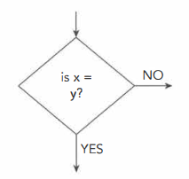
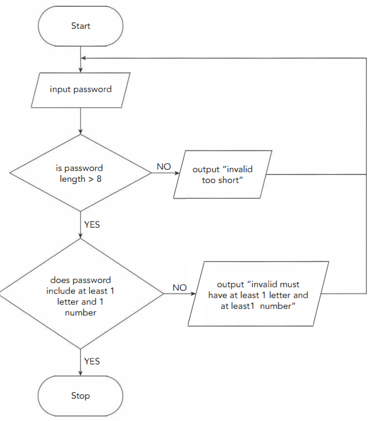

The 3 basic programming constructs...
|
..."Selection" is one of them
|
|---|
In simple terms: The program asks a yes-or-no question about age. If the answer is yes (age is less than 18), it prints Child. If the answer is no, it prints Adult. The words IF, THEN, ELSE, and ENDIF mark the two possible paths and the end.
In simple terms: The program compares two numbers. It first checks if Num1 is bigger; if yes, it prints Num1. If not, it checks if Num2 is bigger; if yes, it prints Num2. If neither is bigger, the last part runs and says the values are the same.
In simple terms: The variable Found already holds TRUE or FALSE. If it is TRUE, the program prints that the search worked. Otherwise it prints that the search did not work. No extra comparison is needed because the variable itself is the condition.
In simple terms: The program allows someone to ride if they are tall enough or heavy enough, and their age is between 6 and 69. The brackets keep the checks in the correct groups. If all the required parts are satisfied, it prints You can ride; otherwise it prints the warning message.


In simple terms: The program looks at the value in Grade and picks the matching line. If it is A, it prints Excellent; if it is B, it prints Good; if it is C, it prints Average. For any other value, the OTHERWISE line runs.
In simple terms: The number in Choice decides which calculation to make. Choices 1 to 4 do the four operations and store the result in Answer. If the number is not 1, 2, 3, or 4, the program prints a helpful message.